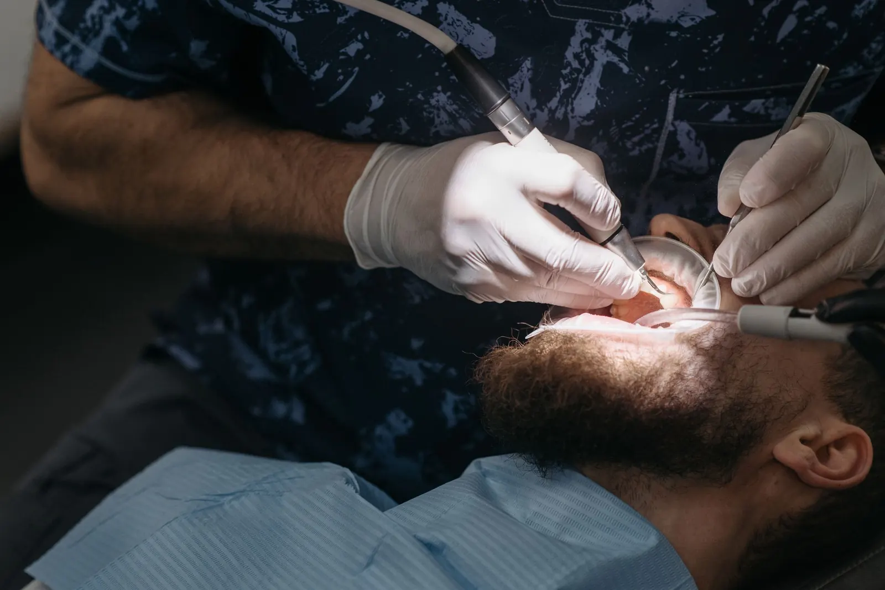
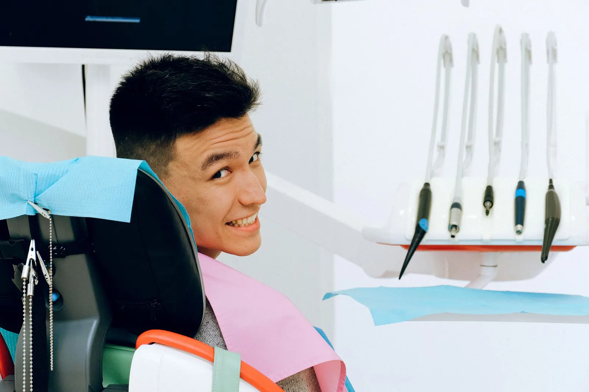
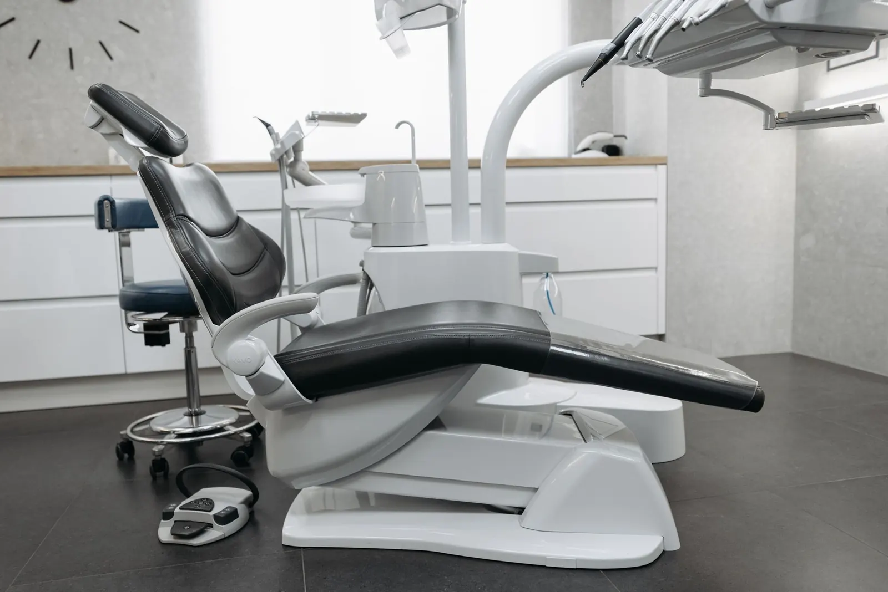
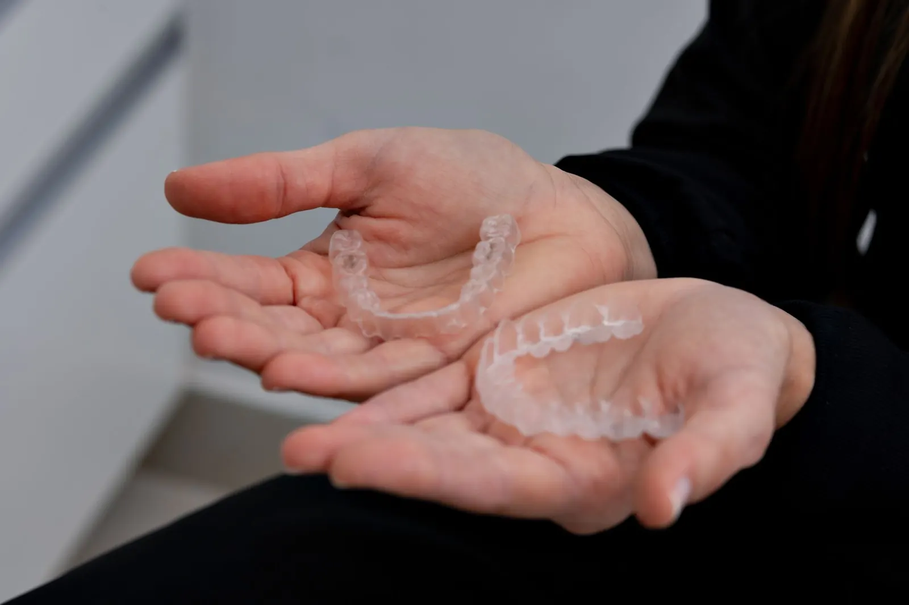
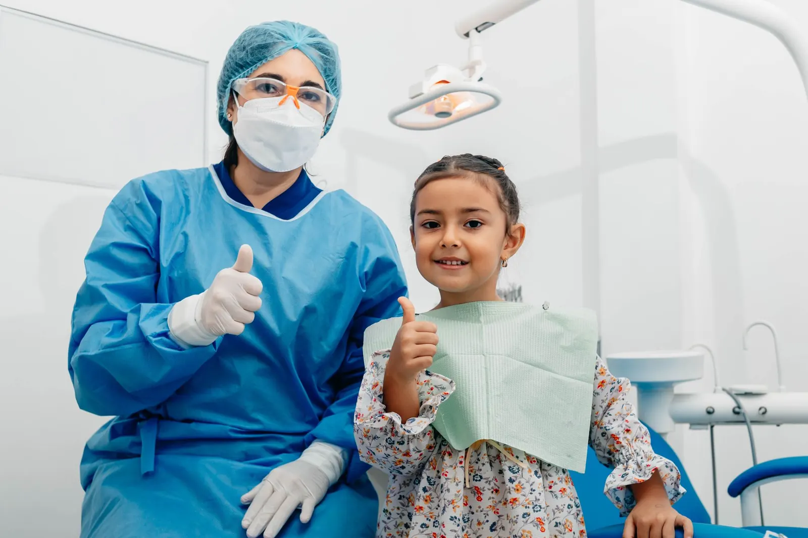
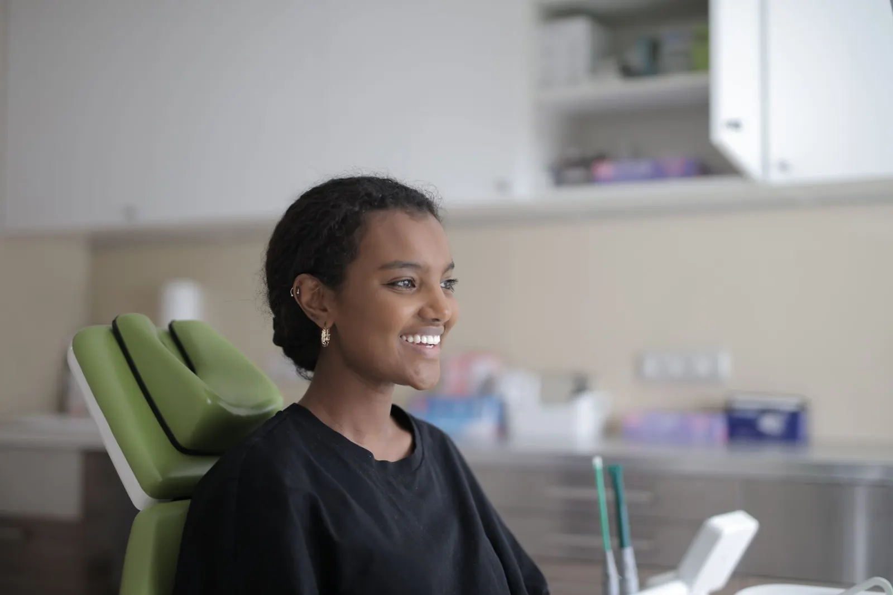
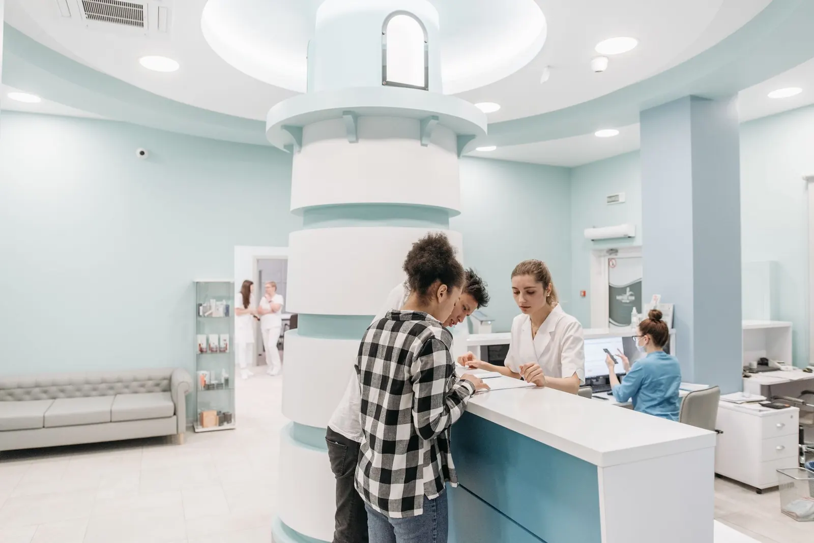
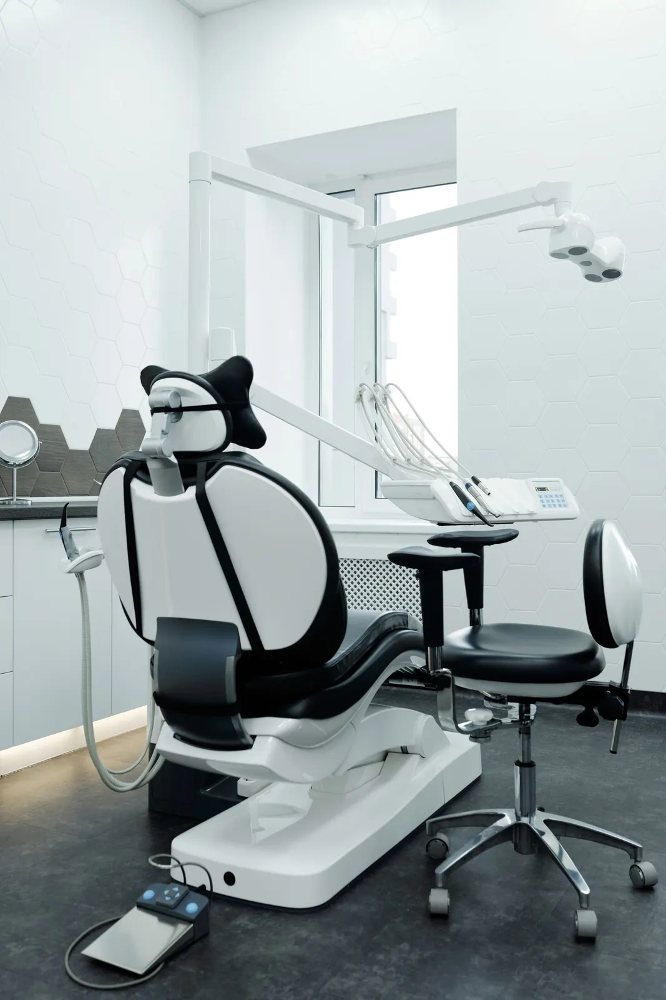
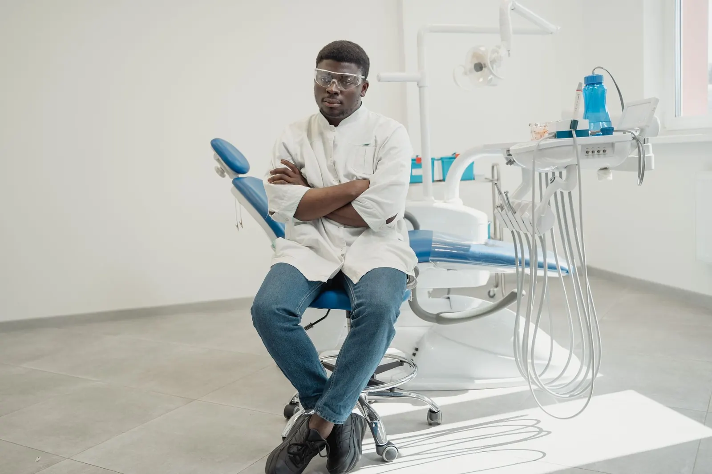

Sprechzeiten werden geladen
Zahnmedizin, für die wir uns Zeit nehmen.
In unserer Praxis am Lindenhain erklären wir, bevor wir behandeln. Sie wissen immer, was wir tun, warum wir es tun und was es kostet.
- Alle Kassen und privatGesetzlich und privat Versicherte
- Eigenes LaborKurze Wege bei Zahnersatz
- BarrierefreiAufzug bis in die Praxis
- Parkplätze am HausHaltestelle vor der Tür
Ein guter Zahnarztbesuch beginnt mit Zuhören. Deshalb planen wir für jeden Termin genug Zeit ein, sprechen offen über Möglichkeiten und Kosten und behandeln erst, wenn Ihre Fragen beantwortet sind.
Leistungen
Was wir für Ihre Zähne tun können.

01Vorsorge und ProphylaxeKontrolle und professionelle Zahnreinigung, damit kleine Probleme klein bleiben.
02Zahnerhalt und FüllungenZahnfarbene Füllungen und Wurzelbehandlungen, um Ihre eigenen Zähne zu erhalten.
03Implantate und ZahnersatzVon der Krone bis zum Implantat, geplant mit Ihnen und gefertigt im eigenen Labor.
04Unsichtbare ZahnschienenDurchsichtige Schienen für leichte bis mittlere Fehlstellungen.05Ästhetische ZahnmedizinBleaching, Veneers und zahnfarbene Korrekturen, ehrlich beraten.
06KinderzahnheilkundeEin erster Zahnarztbesuch, an den sich Kinder gern erinnern.
Angst vor dem Zahnarzt
Sie bestimmen das Tempo.
Viele Menschen gehen ungern zum Zahnarzt. Bei uns beginnt alles mit einem Gespräch ohne Behandlung. Wir vereinbaren ein Handzeichen, bei dem wir sofort unterbrechen, und planen bewusst mehr Zeit ein.
Gespräch vereinbarenIhr erster Besuch
So läuft es bei uns ab.
- 1Termin anfragenOnline oder telefonisch. Sie nennen Ihr Anliegen und Ihre Wunschzeit.
- 2AnkommenDen Anamnesebogen können Sie vorab zu Hause ausfüllen.
- 3Untersuchung und GesprächWir schauen uns alles in Ruhe an und erklären, was wir sehen.
- 4Ihr PlanSie erhalten einen Vorschlag mit Ablauf und Kosten und entscheiden in Ruhe.
Praxis und Team
Helle Räume und Menschen, die zuhören.



Wir suchen Verstärkung. ZFA in Voll- oder Teilzeit und Auszubildende.
Zur Karriereseite